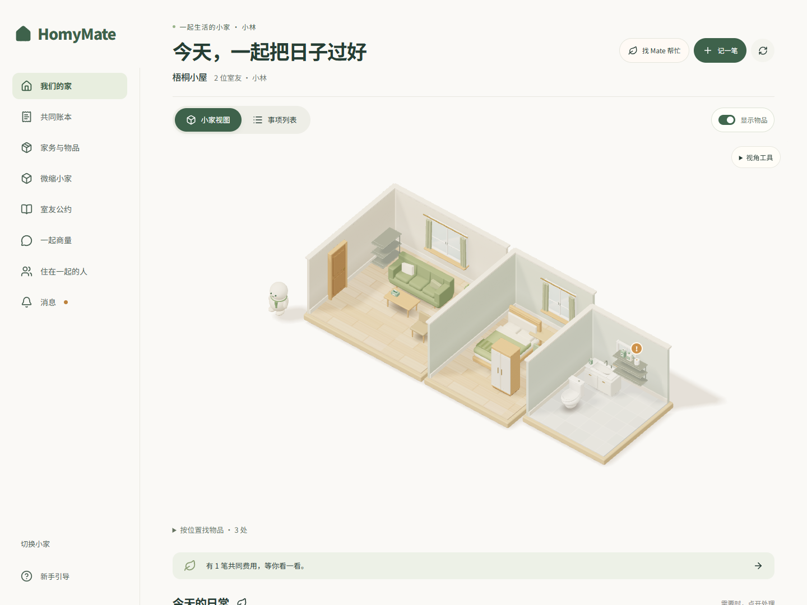
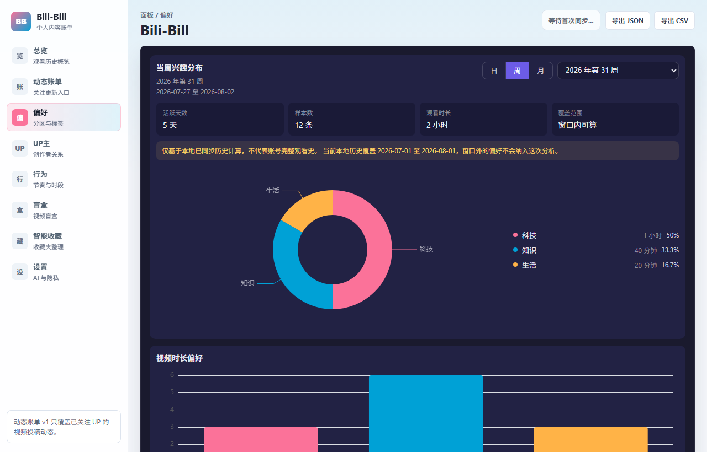
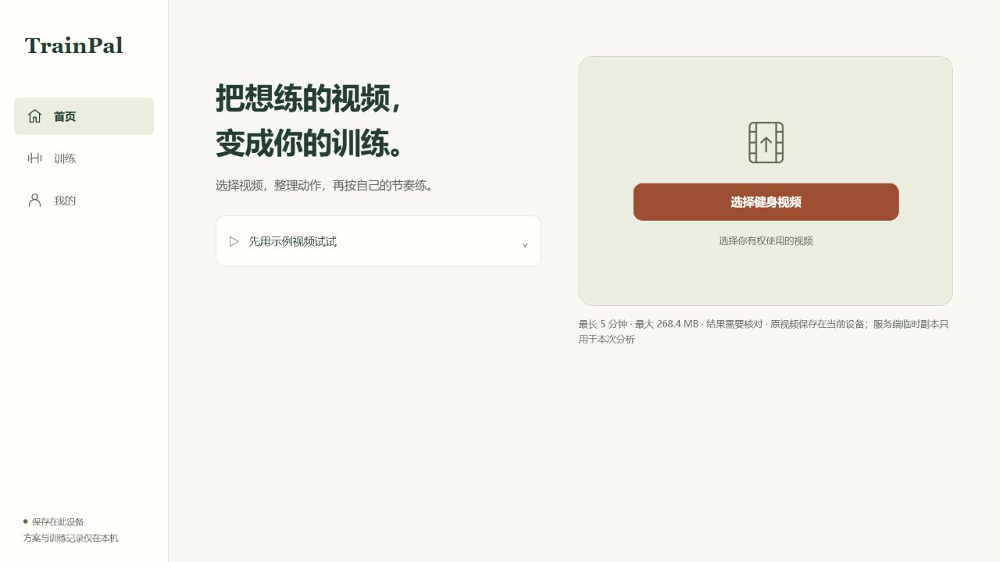

Momentum Planet
一边运动打卡，一边带着角色闯关。
PLAY ↗HI, I'M LittleNuB
喜欢健身的灵魂歌手
同济土木→同济交通→PM→AI PM + AI Builder
ME + AI = CREATIVITY + MOMENTUM

01 / SELECTED WORK
从生活里的小事开始。

和室友一起记账、分家务，照顾小家。

找回看过的内容，带着出处继续追问。

把想练的视频，整理成能跟着练的方案。
界面图片使用示例数据；TrainPal 图片为本地开发版。点击查看项目说明与可用入口。
也做了些小玩具。
能玩的放在前面，后面两个还在做。